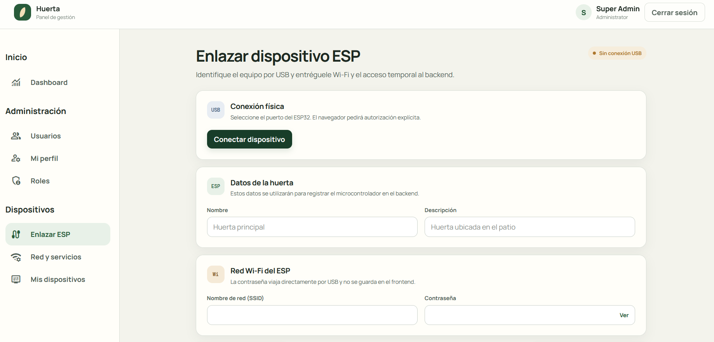
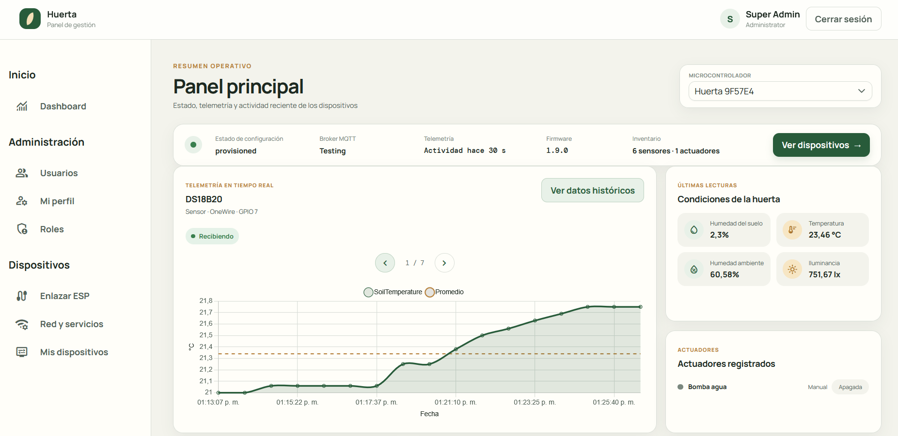
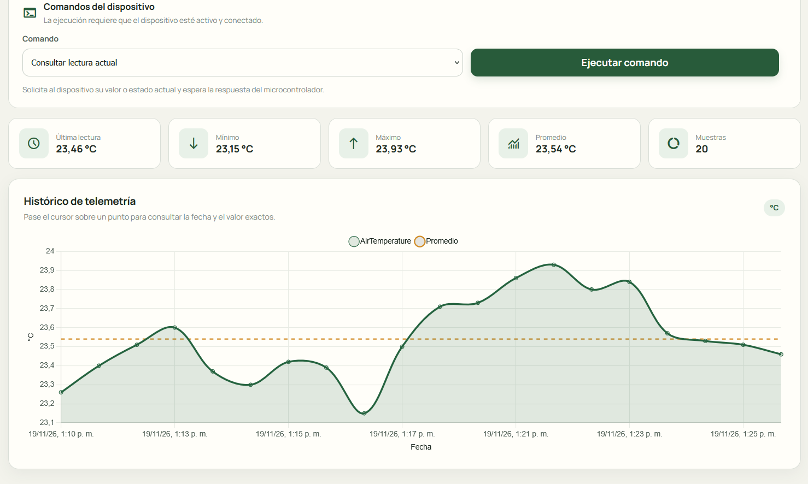

Usuarios y autorización
JWT, roles, usuarios activos, perfil y acceso administrativo a operaciones sensibles.
Documentación técnica · .NET 10
Una API que convierte usuarios, dispositivos y mensajes MQTT en aprovisionamiento seguro, inventario consultable, telemetría persistente, comandos correlacionados y actualizaciones OTA.
Capacidades
La API conecta los flujos humanos del front con los contratos de bajo nivel del firmware sin entregar al navegador las credenciales privadas del microcontrolador.
JWT, roles, usuarios activos, perfil y acceso administrativo a operaciones sensibles.
Bootstrap temporal, claim idempotente, credenciales MQTT cifradas y factory reset.
Inventario, telemetría histórica, publicación en vivo y acciones dirigidas al dispositivo.
Releases, artifacts, manifiestos verificados y seguimiento del estado de actualización.
Sistema distribuido
Cada canal tiene una responsabilidad concreta. PostgreSQL mantiene el estado consistente y los workers conectan la mensajería asíncrona con los casos de uso.
Angular + JWTFrontAdministración, provisioning, consultas y comandos.
HTTP + SignalRGardensBackCasos de uso, seguridad, persistencia y coordinación.
MQTTESP32-C3Inventario, telemetría, acciones, control y OTA.
InventoryConsumerSincroniza el hardware informado.
TelemetryConsumerPersiste y publica lecturas.
ActionResponseCorrelaciona comandos.
FirmwareStatusActualiza el progreso OTA.
ExpirationWorkerExpira solicitudes pendientes.
Arquitectura
La solución mantiene el dominio y los casos de uso aislados de detalles como ASP.NET Core, Entity Framework o MQTT.
Controladores, middleware, autenticación, Swagger, health checks y SignalR.
Servicios, DTO, validaciones y contratos para persistencia y mensajería.
Entidades, estados, enumeraciones y reglas centrales de la plataforma.
EF Core, PostgreSQL, criptografía, repositorios, MQTT y workers.
Aprovisionamiento
El usuario autenticado inicia el flujo y recibe un token temporal destinado al ESP.
La API vincula el microcontrolador con su propietario y firma una respuesta verificable.
Las credenciales se cifran con AES-256-GCM usando material aportado por el dispositivo.
Tras conectarse, el firmware publica sus sensores, actuadores y versión.

Persistencia
Las entidades permiten seguir el dispositivo desde el alta hasta cada lectura, comando y cambio de firmware.
MicrocontrollerDeviceIdentidad, propietario, placa, firmware y estado de aprovisionamiento.
DeviceClaimSolicitud y resultado idempotente de vinculación.
MqttCredentialEstado y versión de las credenciales asociadas al equipo.
Device / DeviceTelemetryInventario de sensores y actuadores con sus lecturas históricas.
DeviceCommandSolicitud, publicación, respuesta, expiración y error correlacionados.
FirmwareRelease / UpdateArtifact, manifestación y estado OTA por dispositivo.
Superficie HTTP
Swagger expone el detalle actualizado de rutas, cuerpos, respuestas y autorización. Todos los controladores de aplicación usan el prefijo /api.
| Grupo | Responsabilidad | Autorización |
|---|---|---|
/api/Auth | Inicio de sesión y emisión JWT. | Anónimo en login |
/api/User · /api/Roles | Usuarios, perfil, estados y roles. | JWT / Administrador |
/api/DeviceProvisioning | Start, claim, credenciales y factory reset. | JWT o token temporal |
/api/DeviceInventory | Dispositivos, telemetría y comandos. | JWT |
/api/FirmwareReleases | Crear, publicar, consultar y revocar releases. | JWT / Administrador |
/api/DeviceFirmwareUpdates | Solicitar y seguir una actualización OTA. | JWT |
/health · /swagger | Diagnóstico y contrato OpenAPI. | Anónimo |
/hubs/telemetry | Publicación en tiempo real hacia el front. | JWT |
Contratos en acción
Los identificadores son ilustrativos, pero las rutas, tópicos y propiedades corresponden a los contratos implementados.
POST /api/DeviceProvisioning/start
Authorization: Bearer <jwt>
{
"name": "Huerta principal",
"description": "Controlador del cultivo",
"contractVersion": 1,
"identifyRequestId": "identify-a1b2c3",
"deviceId": "huerta-c3-a0f262a61a68",
"hardwareId": "a0f262a61a68",
"mqttClientId": "huerta-c3-a0f262a61a68",
"board": "esp32-c3-devkitm-1",
"firmwareVersion": "1.0.0",
"provisioningState": "unprovisioned",
"wifiConfigured": false,
"mqttConfigured": false
}La respuesta entrega un token de corta duración y un bootstrapRequestId. El ESP usa ese token para registrar el claim y recibir sus credenciales MQTT cifradas.
gardens/{deviceId}/inventory
gardens/{deviceId}/telemetry
gardens/{deviceId}/actions
gardens/{deviceId}/actions-response
gardens/{deviceId}/control
gardens/{deviceId}/control-status
RabbitMQ expone MQTT para el firmware. Los consumidores alojados en la API validan el dispositivo, persisten los mensajes y correlacionan cada respuesta mediante requestId.
Topic: gardens/huerta-c3-a0f262a61a68/telemetry
{
"sensorReadings": [{
"id": 1,
"name": "DS18B20",
"measurementType": "SoilTemperature",
"measurementUnit": "Celsius",
"esp32Pin": 7,
"connType": "OneWire",
"value": 22.7
}],
"actuatorReadings": [{
"id": 6,
"name": "Bomba de agua",
"esp32Pin": 3,
"connType": "Digital",
"mode": "Manual",
"state": 0
}]
}El worker guarda las lecturas en PostgreSQL y publica TelemetryReceived por SignalR al grupo del microcontrolador.
POST /api/DeviceInventory/Commands?waitForResponse=true
Authorization: Bearer <jwt>
{
"deviceIds": [6],
"command": "SetWaterPumpState",
"state": true,
"mode": null
}
Publish: gardens/{deviceId}/actions
Consume: gardens/{deviceId}/actions-response
{
"type": "device_action_result",
"contractVersion": 1,
"requestId": "cmd-f47ac10b",
"deviceId": "huerta-c3-a0f262a61a68",
"command": "SetWaterPumpState",
"success": true,
"telemetry": {
"sensorReadings": [],
"actuatorReadings": [{ "id": 6, "state": 1 }]
}
}El comando transita por Pending, Published y Completed. Si no hay respuesta antes del vencimiento, el worker lo marca como Expired.
Resultados observables
La telemetría que ingresa por MQTT se persiste, consulta por HTTP y publica por SignalR para construir vistas operativas e históricas.

Estado del microcontrolador, inventario, últimas lecturas y actividad en tiempo real.

Lecturas filtradas con fecha UTC, métricas agregadas y comando de actualización.
Seguridad
La API separa la sesión humana del material usado por el firmware y valida la configuración crítica al iniciar.
Protección de controladores, SignalR y operaciones administrativas.
El valor de provisioning expira y no se conserva en texto claro.
Las credenciales MQTT se entregan autenticadas y cifradas para el dispositivo.
Destino, requestId, versión, expiración y autenticación limitan replay y cruce de equipos.
Clave pública, firma, hash, tamaño y placa se validan antes de publicar.
Los errores HTTP se normalizan sin convertir los secretos en información de diagnóstico.
Ejecución y despliegue
El repositorio puede ejecutarse de forma independiente, pero el entorno completo utiliza Compose para unir API, PostgreSQL, RabbitMQ y front.
dotnet restore .\GardensBack.slnx dotnet build .\GardensBack.slnx dotnet run --project ` .\GardensBack\GardensBack.csproj ` --launch-profile https
docker compose up -d --build gardens-back docker compose ps docker compose logs -f gardens-back # API interna: gardens-back:8080
AllowHttp debe deshabilitarse y la conectividad anunciada al ESP debe utilizar direcciones alcanzables desde su red.